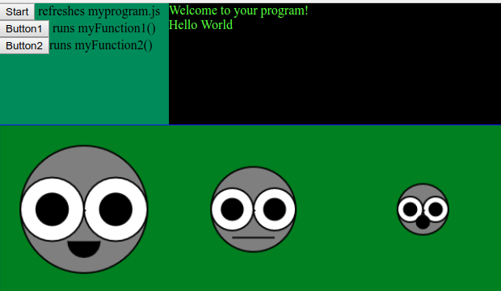

Easy Programming
This page gives you a basic introduction to programming
Using this simple collection of functions you can make an interactive webpage and even a simple game.
There are explanations on what each thing does
Exercise 1 - create a simple web page
Copy the templates
copy the files "index.html", "basic.css" and
"basic.js" to a new folder in your documents folder
Make a Javascript program say Hello World
Create a new text file in your documents folder called "myprogram.js" and paste in the text below
print("Hello World")
Save the file and double click the "index.html"
You should see a green screen with some text saying
Welcome to your program!
Hello World
Exercise 2 - Introducing the canvas
In your myprogram.js add the following lines at the end of the program
border("green", "blue")
happyFace(100,100, 75)
normalFace(300,100, 50)
sadFace(500,100, 30)
The first line colors the canvas green and puts a blue border around it
The next lines draw faces on the canvas - the numbers there are parameters and they mean the following
happyFace(X,Y, SIZE)
Where X = how many pixels on the screen from the left
Y = how many pixels on the screen from the top
SIZE = how big the face is
You should see a screen like below

Exercise 3 - Adding your own functions
On the top left of the above screenshot, you will also see 3 buttons
Start refreshes myprogram.js
Button1 runs myFunction1()
Button2 runs myFunction2()
A function is a little bit of code that runs when something happens (like press a button or click the mouse)
When the buttons are clicked they will "run" the functions named myFunction1 and myFunction2 depending on which button you press.
We need to create the functions for buttons 1 and 2.
In your myprogram.js you need to add the following code at the end of the file
function myFunction1() {
print('you pressed button 1')
// you can add more code here that runs when button 1 is pressed
event.preventDefault()
}
function myFunction2() {
print('you pressed button 2')
// you can add more code here that runs when button 2 is pressed
event.preventDefault()
}
Now refresh the index.html page (in your browser, press [CTRL] [F5]) and you will see in the logs
Welcome to your program!
Hello World
you pressed button 1
you pressed button 2
Exercise 4 - Digging into the Library
Now that you have built a basic page, you can explore how it all works
- open the basic.js file to see what the functions do.
- check out the syntax of javascript [ADD LINK]